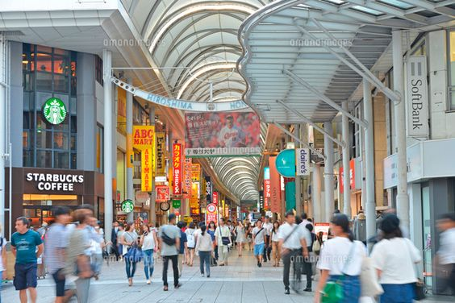
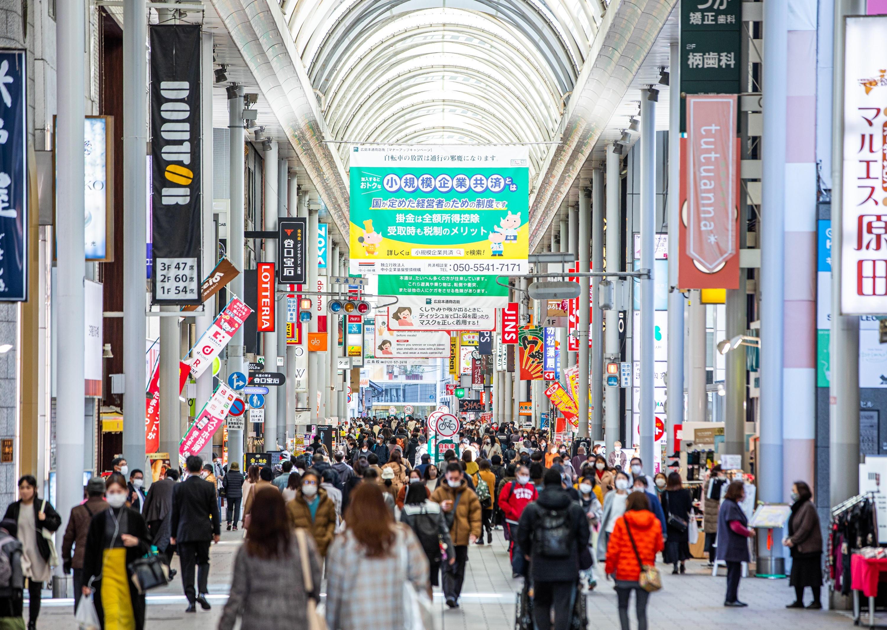
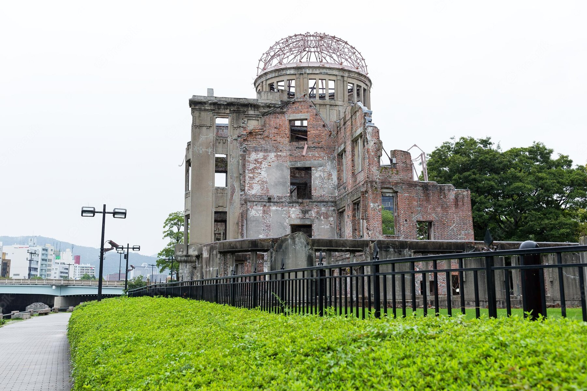
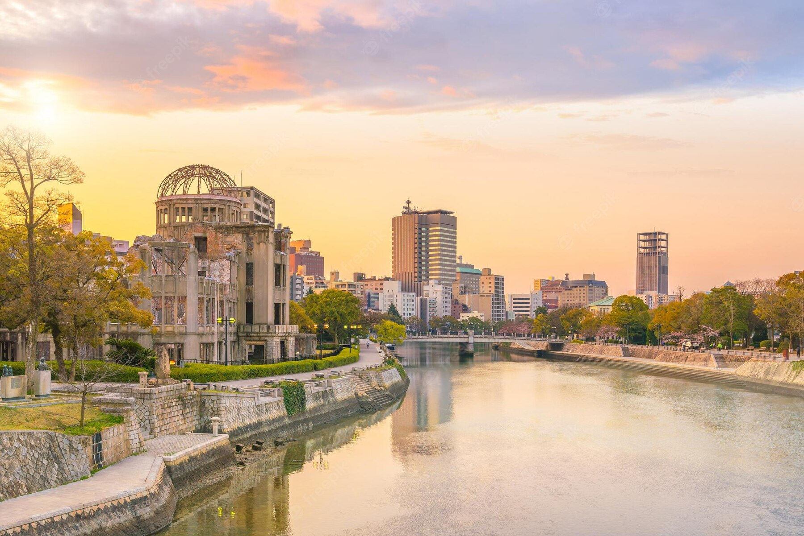

心躍る広島・宮島旅

広島の街を走る路面電車に揺られ、
広島の景色や街並みを味わいながら、
定番の観光スポットを押さえつつ、
街歩きも楽しむ。
おススメの広島の定番モデルコース
「日帰り路面電車旅 広島市内・宮島編」をご紹介します。
広島の景色や街並みを味わいながら、
定番の観光スポットを押さえつつ、
街歩きも楽しむ。
おススメの広島の定番モデルコース
「日帰り路面電車旅 広島市内・宮島編」をご紹介します。


広島本通商店街
広島本通商店街は国際平和文化都市ひろしま及び中・四国地域を代表する超広域型商店街で、一般に「本通り」という呼称で広く親しまれています。
所要時間 約４５分
徒歩で移動 約１５分
原爆ドーム
原爆ドームは、1915年(大正4年)に広島県物産陳列館として建設され、当時の広島のシンボルでもありました。
1945年(昭和20年)8月6日、爆心地からわずか160メートルの至近距離で被爆。
ほぼ真上から爆風が到達したため、建物の壁の一部は崩壊を免れました。
平成8年(1996年)、世界遺産に登録された原爆ドームは、被爆当時の姿のまま立ち続けることで、
核兵器の廃絶と世界の恒久平和の大切さを訴え続けています。
所要時間 約１５分


徒歩で移動 約１分
おりづるタワー
2016年9月にオープンした複合施設で、1Fには 物産館・カフェがあり、展望台からの眺望は、世界遺産「原爆ドーム」、
平和記念公園一帯に広がる平和と復興した街並み、そして晴れた日には遠く宮島の弥山まで見渡すことができます。
世界中から集まる平和への想いや祈り、それらが積み重なって完成する「おりづるの壁」にぜひ参加してみましょう。
所要時間 約７０分
「原爆ドーム前」電停から路面電車「広電宮島口」行きに乗車し、
「広電宮島口」駅下車 約45分
「広電宮島口」駅下車 約45分
◯
宮島口桟橋からフェリーで宮島桟橋へ 約１０分